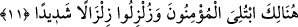
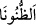
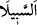
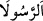
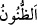

Bilesin ki onlar iki sebepten korkuya kapıldılar: Birincisi çeşitli gruplardan meydana
gelen düşman ordularından (ahzâb) kendileri için korktular. Çünkü bu gruplar onlardan
kat kat fazlaydı. İkincisi daha önce geçtiği gibi Kurayza oğulları’nın ahdi bozmaları
sebebiyle şehirde kalan kadın ve çocukları için korktular. Zaten soğuk ve açlık da
müslümanları iyice bunaltmıştı. Nitekim bazı sahabîler “Hendekte üç gün bir şey
yemeden bekledik.” demiştir. Hz. Peygamber (a.s.) da açlıktan karnına taş bağladı.
Gerçi bu durum O’nun: “Ben sizin gibi değilim, elbet ben rabbimin nezdinde
gecelerim rabbim beni yedirir içirir.”[183] hadîsiyle çelişmez. Çünkü bazen sevabı
çoğaltmak için böyle imtihanlar olur.
Âriflerden birisi Hz. Peygamber (s.a.)’in karnına taş bağlaması hadîsini, bu durumun
gerçekte açlıktan değil, bilakis O’nun kemal-i letâfeti sebebiyle melekût âlemine
uçmamak ve irşad âleminde karar kılmak için olduğuna yormuştur.
Dünyâ kendisinin devamlı yağan (rahmet) yağmurunun feyzinden bir sızıntı ve
nîmetlerinin denizinin süslerinden bir damla olan zat açlıktan karnına taş bağlamaya
ihtiyaç duymaz. Ancak hâcet ve zarûret ânında nîmet bulunduğu halde sabretmek
Rahmân’ın ismet ve korumasıyla mâsûm olan hâs ve hâlis kullarının özelliklerindendir.
Senin ihtişam meclisinde yedi gezegen bir bardak kadardır,
Senin nîmet mutfağında dokuz felek bir tabak kadardır.
“Ve siz” ey mutlak olarak îmânı ızhâr edip ortaya koyanlar! “Allah hakkında türlü
türlü şeyler düşündüğünüz” farklı farklı zanlarda bulunduğunuz “zaman;” çünkü
ihlaslı, kalbleri ve ayakları sâbit olanlar Allah Teâlâ’nın dînini yüceltme konusunda
vaadini gerçekleştireceğini veya kendilerini imtihan edeceğini düşündüler. Bu yüzden
Uhud savaşında olduğu gibi ayaklarının kaymasından ve tahammülde zaaf göstermekten
korktular. Ancak kenarda duran kalbleri zayıf kimseler ile münâfıklar, onlardan
nakledildiği gibi kendisinde hayır olmayan şeyler düşündüler. Nitekim aşağıda
gelecektir.
İmam Hafs, Hz. Osman (r.a.) Mushafı’na uyarak “, “ ve “
kelimelerindeki bu elifleri ve lamları isbât etmiş/okumuştur. Çünkü Hz. Osman
Mushaf’ında bu harfler bu şekilde mevcuddur. Bugün de o hüküm üzere kalmıştır. Bu
kelimeler, vasl hâlinde elifsiz, vakf hâlinde ise elifle okunur. Vasl ve vakf hâlinde işbâ‘
elifi terk edilerek “ diye de okunmuştur. Aslolan ve kıyâsa uygun olan da budur.
Birinci (işbâ elifi ile olan) şekildeki kelimelerde elif, fâsılalara riâyet etmek için onları
kafiyelere benzeterek ilâve edilmiştir. Çünkü şâirlerden belâğat ehli olanlar, kafiyelerde
fethayı işbâ için bu tür elifleri ilâve ederler.